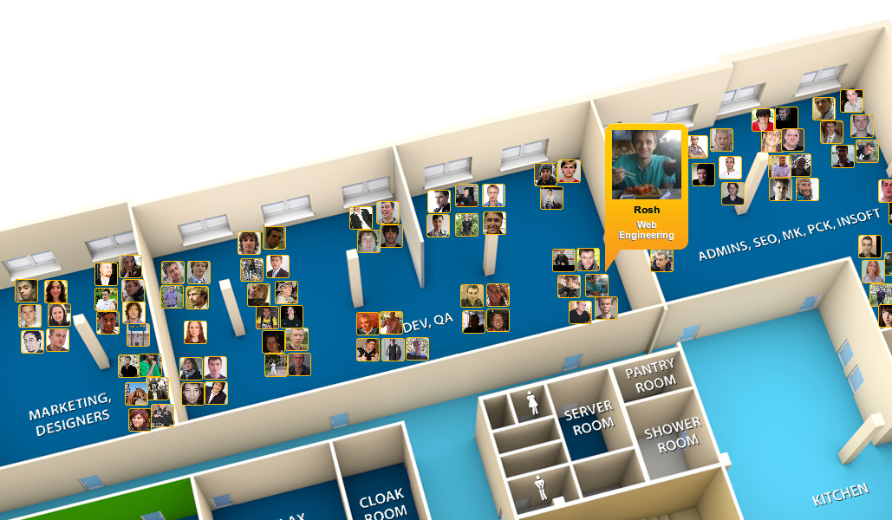

XHprof + xhgui
Profiling PHP applications
Created by Oleg Roshnivskyi / Rosh
Themes: Default -
Sky -
Beige -
Simple -
Serif -
Night
Moon -
Simple -
Solarized
About me
PHP Developer
Internal systems team
What is
Xhprof
XHProf is a function-level hierarchical profiler for PHP and has a simple HTML based user interface. The raw data collection component is implemented in C (as a PHP extension).
xhgui
A graphical interface for XHProf data built on MongoDB.
Installation
Xhprof
~
sudo pear upgrade pear
sudo pecl install xhprof-0.9.4
extension=xhprof.so (php.ini)
restart server/fpm
sudo apt-get install graphviz (optional)
Xhgui
Requirements
- XHProf to actually profile the data
- MongoDB PHP MongoDB PHP extension
- MongoDB MongoDB Itself
- mcrypt PHP must be configured with mcrypt (which is a dependency of Slim)
- dom If you are running the tests you'll need the DOM extension (which is a dependency of PHPUnit)
Slides
- xhprof_disable — Stops xhprof profiler
- xhprof_enable — Start xhprof profiler
- xhprof_sample_disable — Stops xhprof sample profiler
- xhprof_sample_enable — Start XHProf profiling in sampling mode
Xhgui interface
Recent
Watch functions
Watch functions allow you to set function name/patterns that you want to see at the top of each run result page. Watches can either be exact matches or use PCRE patterns to match multiple function names.
Waterfall
Runs for url
Runs for url
Works in Mobile Safari
Try it out! You can swipe through the slides and pinch your way to the overview.
Marvelous Unordered List
- No order here
- Or here
- Or here
- Or here
Fantastic Ordered List
- One is smaller than...
- Two is smaller than...
- Three!
Transition Styles
You can select from different transitions, like:
Cube -
Page -
Concave -
Zoom -
Linear -
Fade -
None -
Default
Themes
Reveal.js comes with a few themes built in:
Default -
Sky -
Beige -
Simple -
Serif -
Night
Moon -
Simple -
Solarized
* Theme demos are loaded after the presentation which leads to flicker. In production you should load your
theme in the <head> using a <link>.
Global State
Set data-state="something" on a slide and "something"
will be added as a class to the document element when the slide is open. This lets you
apply broader style changes, like switching the background.
Custom Events
Additionally custom events can be triggered on a per slide basis by binding to the data-state name.
Reveal.addEventListener( 'customevent', function() {
console.log( '"customevent" has fired' );
} );
Slide Backgrounds
Set data-background="#007777" on a slide to change the full page background to the given color.
All CSS color formats are supported.
Image Backgrounds
<section data-background="image.png">Repeated Image Backgrounds
<section data-background="image.png"
data-background-repeat="repeat" data-background-size="100px">Background Transitions
Pass reveal.js the backgroundTransition: 'slide' config argument to make backgrounds slide rather
than fade.
Background Transition Override
You can override background transitions per slide by using data-background-transition="slide".
Clever Quotes
These guys come in two forms, inline:
“The nice thing about standards is that there are so many to choose from”
and block:
“For years there has been a theory that millions of monkeys typing at random on millions of typewriters would reproduce the entire works of Shakespeare. The Internet has proven this theory to be untrue.”
Pretty Code
function linkify( selector ) {
if( supports3DTransforms ) {
var nodes = document.querySelectorAll( selector );
for( var i = 0, len = nodes.length; i < len; i++ ) {
var node = nodes[i];
if( !node.className ) {
node.className += ' roll';
}
}
}
}
Courtesy of highlight.js.
Intergalactic Interconnections
You can link between slides internally, like this.
Fragmented Views
Hit the next arrow...
... to step through ...
any type- of view
- fragments
Fragment Styles
There's a few styles of fragments, like:
grow
shrink
roll-in
fade-out
highlight-red
highlight-green
highlight-blue
Spectacular image!

Export to PDF
Presentations can be exported to PDF, below is an example that's been uploaded to SlideShare.
Take a Moment
Press b or period on your keyboard to enter the 'paused' mode. This mode is helpful when you want to take distracting slides off the screen during a presentation.